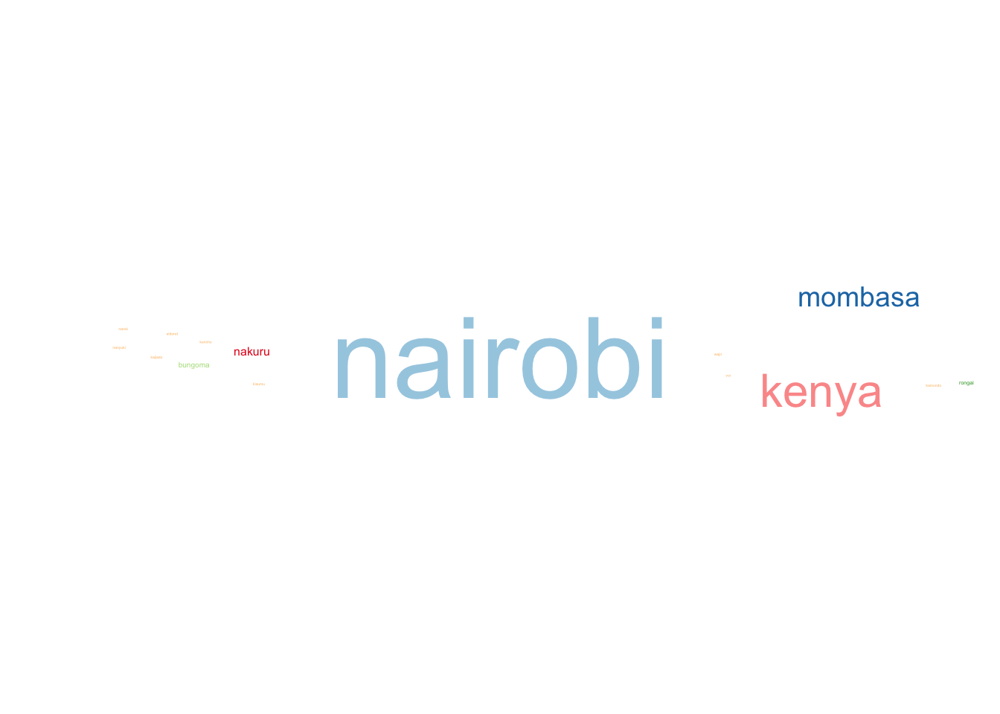

source("Scripts/Sentiment.Analysis.R", local = knitr::knit_global())Sentiment Analysis using LSTM in R
A classification of COVID-19 Vaccine Tweets in Kenya
Introduction
Sentiment Analysis is a function used to get sentiment information from sentences contained in a text. The sentiments generated can either be positive, negative or neutral. In the data science field, technique used for deriving these sentiments is part of a larger discipline called Natural Language Processing (NLP).
Recurrent Neural Networks (RNN), a machine learning model widely used in NLP, is good at learning patterns on textual data that’s sequential.[1] Long short-term memory (LSTM) is a type of RNN with a higher memory power to remember outputs of current nodes for a more extended period to produce outcome(s) for the next node(s).[2]
Since twitter data contains text patterns that form trending topics and these patterns are somehow interconnected, I’ll use LSTM in classifying COVID-19 vaccine tweets posted by Kenyans on Twitter, popularly known as #KOT.
R Script
Load the sentiment analysis R script
Natural Language Processing (NLP)
Wordcloud
A word cloud constitutes textual data where the size of each text is a representative of its frequency count. The below word cloud shows the how frequent different user locations appeared on the COVID-19 tweets vaccines data frame. Nairobi had the highest tweets, followed by Mombasa then Nakuru. Other popular towns where #KOT posted tweets included Eldoret and Kisumu. There were tweets which were generally geotagged as Kenya.
# Create a corpus based in the Location data column
LocationCorpus <- Corpus(VectorSource(Data$user_location_1))
LocationDTM <- TermDocumentMatrix(LocationCorpus)
# Create a matrix called LocationM based on Location DocumentTermMatrix
LocationM <- as.matrix(LocationDTM)
# Get the count per each word and create a dataframe
count <- sort(rowSums(LocationM),decreasing=TRUE)
DF <- data.frame(word = names(count),freq=count)
# Wordcloud code
set.seed(1234)
ggplot(data = DF,
aes(label = word, size = freq, col = as.character(freq))) +
geom_text_wordcloud(rm_outside = TRUE, max_steps = 1,
grid_size = 9, eccentricity = .1)+
scale_size_area(max_size = 20)+
scale_color_brewer(palette = "Paired", direction = -1)+
theme_void()
LSTM
Training and testing data
The initial_split() function creates a single binary split of the data into training and testing set. Since we’re working with textual data, we’ll filter data to include only text that comprise of greater than 15 characters. Short texts (in this case tweets) have uninformative single words. [4]
# Set seed to reproduce this work
set.seed(2345)
# Create a binary split called vaccine.tweets.split.
vaccine.tweets.split <- Data %>%
filter(nchar(text)>= 15) %>%
initial_split()
# Create training and testing data based on the number of tweets
# Text column holds the tweets
training.data <- training(vaccine.tweets.split)
testing.data <- testing(vaccine.tweets.split)Data preprocessing
Data pre-processing in LSTM model will first involve tokenisation. Tokenisation breaks raw text into smaller words and sentences called tokens. After tokenisation, filter the characters using the step_tokenfilter() function. This function filters tokens based on their frequency count.
tweets.vaccine.rec <- recipe(~text, data = training.data) %>%
step_tokenize(text) %>%
step_tokenfilter(text, max_tokens=100) %>%
step_sequence_onehot(text, sequence_length = 100)
tweets.vaccine.rec <- prep(tweets.vaccine.rec)
training.v2 <- bake(tweets.vaccine.rec, new_data = NULL, composition = "matrix")
class(training.v2)[1] "matrix" "array" Modeling
References
- https://www.kaggle.com/code/yashvmohod/coding-11-imdb-sentiment-analysis-with-lstm
- https://www.kaggle.com/code/mich3935/women-revieews
- https://rpubs.com/tangerine/lstm-finance
- https://blog.griddynamics.com/data-scientists-vocabulary-and-scientific-process-applied-to-social-movie-reviews/
- https://www.kaggle.com/code/mich3935/women-revieews